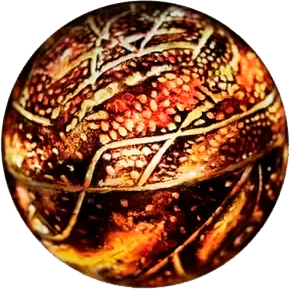
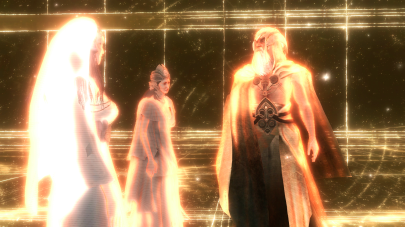
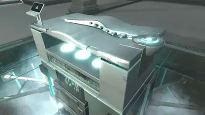
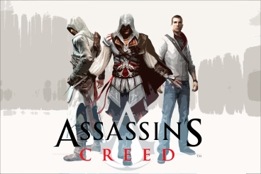
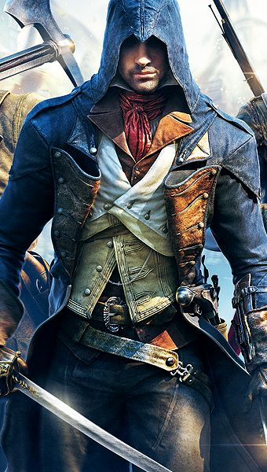
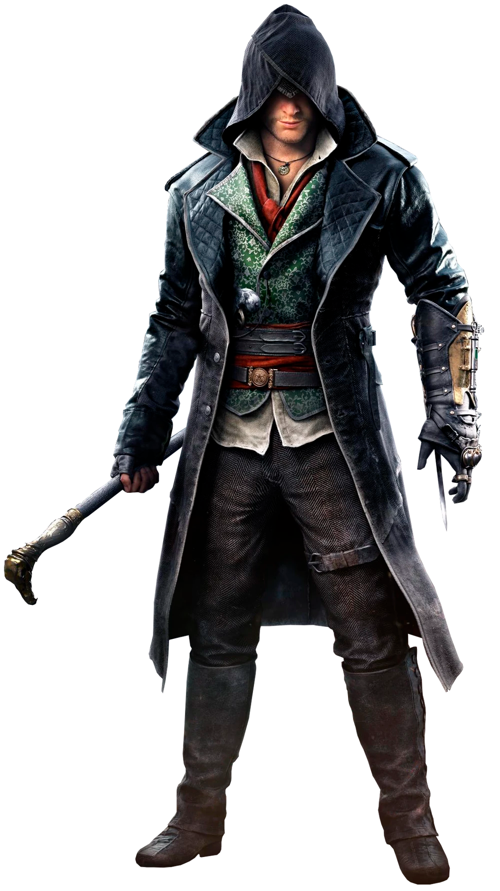

LA HISTORIA COMPLETA DE ASSASSIN’S CREED
¿Quién no ha oído hablar alguna vez de Assassin’s Creed? Ubisoft es el propietario de esta increíble saga de videojuegos que comenzó en 2007 con la salida al mercado de Assassin’s Creed I. Mucha gente ha jugado o conoce de que va el juego, pero mucha otra no conoce la historia completa de la trama de Assassin’s Creed, así que quien mejor que MasNewGaming para contarlo? Antes de nada, quiero advertir que este artículo contiene spoilers y de que no está escrito en el orden de los videojuegos, sino en la línea temporal más sencilla de entender. Dicho esto, disfrutad!
DETALLES DEL JUEGO Y PERSONAJES
Antes de ir directos a la historia, hay que conocer algunas cosas para comprender mejor el argumento de esta historia. En este artículo vamos a hablar solo sobre la historia en los videojuegos ya que opinamos que es la original. Assassin’s Creed tiene 9 entregas pero la historia principal no se lleva a cabo en todos, solo en algunos. Además la historia se desarrolla en varias líneas temporales, ya que hay una parte en el pasado y una en el presente.
PERSONAJES DEL PRESENTE
- Desmond Miles: Protagonista de la trama, realiza todos los viajes al pasado dando vida a sus antepasados a través del Animus.
- William Miles: Padre de Desmond y su mentor y ayudante durante la historia.
- Rebecca Crane: Ayudante de Desmond y creadora del Animus mejorado que usará Miles durante gran parte de la historia.
- Shaun Hastings: Mejor amigo de Desmond e historiador que le ayudará a ir donde tendrá que ir.
- Daniel Cross: Enemigo de Miles y sujeto del Animus que trabaja para Abstergo, intentará cumplir su objetivo antes que lo haga Desmond.
- Dr. Warren Vidic: Doctor en Abstergo y jefe del proyecto Animus, intenta acceder en la memoria de Desmond al principio del primer juego.
- John Standish: Jefe del departamento de informática de Abstergo Entertainment.
- Álvaro Gramatica: Creador del proyecto Helix.
- Violet Da Costa: Seguidora de Juno, agente de campo del grupo Sigma y miembro de los Instrumentos de la Primera Voluntad.
PERSONAJES DEL PASADO (ASESINOS)
- Altaïr Ibn-La’Ahad: Antepasado de Desmond en Assassin’s Creed I. Forma parte de la orden de los Asesinos en Siria.
- Ezio Auditore da Firenze: Antepasado de Desmond en Assassin’s Creed II. Asesino en Florencia, Italia.
- Connor (Ratonhnhaké:ton): Antepasado de Desmond en Assassin’s Creed III. Vive durante la guerra de Independencia de EEUU, es hijo de un templario.
- Edward Kenway: Antepasado de Desmond en Assassin’s Creed IV Blackflag. Es el abuelo de Connor y es un pirata en el Caribe.
- Arno Dorian: Antepasado de Desmond en Assassin’s Creed Unity. Su historia se desarrolla en la Revolución Francesa, concretamente en París.
- Jacob y Evie Frye: Antepasados de Desmond en Assassin’s Creed Syndicate. Son gemelos y viven en la revolución industrial en Londres.
PERSONAJES IMPORTANTES
- Juno: Principal personaje de la trama. Fundadora de los Instrumentos de la Primera Voluntad. Pertenece a la primera civilización y pretende controlar el mundo y a los humanos.
- Aita: Marido fallecido de Juno. Su alma se reencarna en varios personajes de la saga llamados savios.
- Minerva: Creadora del Ojo y enemiga de Juno. Pertenece a la primera civilización.
- Júpiter: Pertenece a la primera civilización. Creador del mapa de los templos que resguardan los artefactos del Edén.
- Sujeto 16: Sujeto que revela varios secretos a Desmond. Su consciencia reside en el Animus. Cumple órdenes de Juno.
PALABRAS CLAVE
- Pieza o Artefacto del Edén: Objeto creado por la primera civilización que permite
controlar la mente humana y hacer que los humanos hagan lo que sea.
- Códice de Altaïr: Códice escrito por el asesino sirio que contiene la psoición de
todas las piezas del Edén.
- Sudario del Edén: Artefacto de la primera civilización que permite la regeneración
de las células del ADN.
- Templo: Puntos de estudio de Juno, Minerva y Júpiter, allí se esconden algunas
piezas del Edén.
- El Ojo:Objeto que posee habilidades de viajes por el tiempo y control del Futuro,
así como el destino de la Tierra.
HISTORIA
La historia cuenta que al principio de los tiempos, la tierra estaba habitada por una civilización anterior a los humanos llamados: La primera civilización. Esta sociedad era mucho más avanzada que nosotros y tenía un gran conocimiento sobre la ciencia genética. A partir de eso, decidieron crear a los seres humanos, que tenían como objetivo servir como trabajadores. Los humanos fueron creados a semejanza de los miembros de la primera civilización. Los seres de esta avanzada civilización tenían el ADN con forma de triple hélice mientras que los humanos tan solo tenían doble hélice. Además, los humanos fueron creados para aguantar el dolor y no ser cobardes.
Para controlar a los homo sapiens, la primera civilización construyó unos artefactos llamados Piezas del Edén, objetos que almacenaban una gran cantidad de energía que tenían el poder de dar órdenes a los humanos. No obstante, surgieron algunos híbridos de los cruzes entre humanos y personas de la primera civilización. Esto hizo que fueran humanos, pero que poseyeran habilidades de sus otras raíces así como el sexto sentido: la vista de águila. Más tarde dos híbridos llamados Adán y Eva decidieron rebelarse y se escaparon llevándose con ellos una de las piezas del Edén, conocida como La Manzana. A raíz de esto, crearon una organización en contra de la primera civilización y muchos humanos se unieron a su causa. Poco a poco, la cosa fue empeorando y estalló una terrible guerra entre ambas razas. La raza humana ganaba en número pero la primera civilización tenía una engeñería y tecnología mucho más avanzada.
Artefacto del Edén:

Mientras la guerra ocurría en la tierra, en el espacio exterior, nuestra estrella pasaba por una fase de cambios y al enfocarse en la guerra, nadie se dio cuenta de que pronto lanzaría una llamarada que consumiría el sistema solar. Alejados de la guerra, Juno, Júpiter y Minerva, tres miembros de la élite de la primera civilización, se percataron de la catástrofe y decidieron tomar cartas en el asunto. Formaron una alianza llamada la Triada Capitolina. Juntos plantearon seis alternativas para hacerle frente al apocalipsis. investigaron estas posibilidades en los llamados templos subterráneos, el más importante estaba bajo la actual ciudad de Nueva York. Las seis alternativas que estudiaron son las siguientes:
- La primera consistía en construír en cuatro torres que consumirían la llamarada. A pesar de tener los recursos y la tecnología para construírlas, el proyecto se rechazó debido a que no tenían tiempo. Se cuenta que solo una torre fue construída.
- También pensaron en usar las piezas del Edén para crear un campo magnético que capturaría la energía. Para esta opción debían construír los fragmentos a gran escala y solo se salvarían unos pocos del desastre por lo que fue cancelada.
- La idea era poner los fragmentos del Edén en órbita con tal de controlar a los humanos y ordenarles que se pusieran a salvo. No obstante, no encontaron la manera de dirigir el rayo de la pieza hacia todos los humanos, con lo cual, igualmente se rechazó.
- Esta alternativa se basó en el descubrimiento de una série de números y ecuaciones que definían el tiempo. Con esto pretendían viajar al pasado y prevenir la catástrofe. Los experimentos fallaron y se canceló el proyecto. Las investigaciones sirvieron de algo porque Minerva creó el Ojo, un objeto que permitía hablar con los seres del futuro.
- La Triada Capitolina pretendía transportar la mente de los seres vivos hacia una forma más resistente distorsionando el espacio tiempo. El marido de Juno se prestó voluntario para probar esta alternativa pero falleció en el intento. Juno decide conservar el ADN de su marido y añaderle unas substancias que hacen de su espíritu immortal y se va reencarnando en personajes que apareceran a lo largo de la historia. Estas reencarnaciones del marido de Juno se llaman savios.
- La última opción fue depositar las mentes en recipientes que aguantarían el cataclismo pero el problema era devolverlas tras éste. Al resultar inviable, se rechazó.
De izquierda a derecha: Juno, Minerva y Júpiter:

Tras rechazar todas las alternativas, llegó el día y el Sol destrozó el planeta azul. tan solo sobrevivieron diez mil humanos y muy pocos seres ancestrales. Las dos razas hicieron las paces y trabajaron juntos. Al pasar las generaciones, los humanos empezaron a ver a los ancestros como divinidades. Esto otrorgó la paz a la Tierra, y de esta manera, Minerva y Jupiter retomaron su trabajo y descubrieron que una nueva llamarada del Sol afectaría a la Tierra en 2012. Mientras estos dos trabajaban para salavar el mundo de nuevo, Juno, enfadada con la raza humana por la muerte de su marido, empezó a estudiar como dominarlos. Cuando se enteraron de esto, los otros dos miembros de la Triada Capitolina decidieron encerrar a Juno en el gran templo en Nueva York.
Minerva mejoró el Ojo que construyó con tal de advertir a los seres humanos del futuro sobre la catástrofe, se lo contó a los savios futuros (miembros con alto porcentaje ancestral). De alguna manera desconocida, Juno consiguió transmitir su consciencia al Ojo y Minerva tuvo que destruirlo antes de incluso probarlo. Volviendo al mundo humano, se crearon dos posturas filosóficas. Una apoyaba que el ser humano debía ser controlado con tal de mantener el orden y la seguridad. Los que pensaban esto se llamaban templarios. La otra postura era la de que el hombre debía ser libre de tomar sus decisiones, este pensamiento era promovido por un grupo llamado asesinos, formado bajo los pensamientos de Adán y Eva.
Ahora dejaremos esto de momento y viajaremos al presente, dónde nos encontramos a Desmond Miles, un jóven camarero que es secuestrado por la empresa Abstergo. Esta empresa está formada en los pensamientos templarios y fue fundada por Juno. Su objetivo es dominar la raza humana. Abstergo pretende usar a Desmond para acceder a sus antepasados y de esta manera encontrar los artefactos del Edén y controlar la humanidad. En la empresa templaria, se nos presenta al Dr. Warren Vidic, principal encargado del proyecto Animus. Para revivir el pasado, utilizan una máquina llamada Animus que conecta con el ADN del sujeto. Miles no sabe lo que está pasando y accede. La chica que le realiza las incursiones en el pasado se llama Lucy, y es una asesina infiltrada. no obstante, Lucy cae ante las tentaciones malvadas de los templarios y se cambia de bando, aunque Desmond aún no lo sabe. A partir de allí revive las memorias de Altaïr, que vive en la actual Siria. Altaïr descubre la traición en su hermandad en Damasco y a través de eso, recupera el artefacto llamado La Manzana. Este le revela la localización de otras de las piezas. El asesino sirio escribe un códice con dichas localizaciones.
El Animus de Abstergo:

Durante el renacimiento italiano, se nos presenta a Ezio Auditore, otro antepasado de Desmond que vive en Florencia. Este asesino pretende vengar la muerte de su familia a la vez que lucha contra el actual Papa, Rodrigo Borgia. Al final de esta misión, Ezio descubre uno de los frutos del Edén y con él, encuentra el códice de Altaïr y descubre la bóveda que contiene uno de los mensajes de La primera civilización advirtiendo de la catástrofe solar. Después de un combate con el Papa, Ezio ve el mensaje que revela dónde se encuentran las otras bóvedas, que estan en los antiguos templos de investigación ancestrales. Tras esto, Ezio decide guardar el fruto del Edén allí.
Altaïr, Ezio y Desmond:

De nuevo en el presente, Desmond escapa de Abstergo con Lucy y se encuentra con su padre William, un líder de los asesinos. William le cuenta las intenciones de Abstergo y Desmond entonces actúa en contra de ellos, intentando encontrar las piezas antes que la corporación. El grupo de asesinos se traslada al antiguo refugio de Ezio y allí Desmond revive las memorias del italiano. Para ello, utilizan una versión mejorada del Animus diseñada por Rebecca. Tras eso, descubren donde Ezio había guardado la pieza del Edén, bajo el coliseo romano y lo recuperan. Al hacerlo, el artefacto causa un efecto extraño en Miles que le hace ver a Juno. Esta le dice la verdad sobre Lucy y el chico la asesina. Además, Juno le revela el lugar del gran templo, Nueva York. Aún en Italia, revive las memorias de otro de sus antepasados.
Volviendo al pasado: Edward Kenway, un asesino de origen galés que se encuentra en los conflictos pirata del Caribe, se involucra en nuestra trama. Kenway conoce a una de las reencarnaciones del marido de Juno (Aita) y este le muestra el observatorio creado por Júpiter. Después de la muerte de Aita, Kenway recupera otra de las piezas del Edén.
Otra vez en el pasado: Juno intentaba hablar con algunos humanos a través del Ojo. Ella consigue contactar con Connor y le convence para encontrar más piezas del Edén y unirse a la causa de los asesinos y de esta manera liberarla. Connor habla con ella a través de una bola de cristal que posee su tribu nativa de Estados Unidos. Connor encuentra la llave del gran templo y Juno le ordena esconderla para que Desmond la encuetre más adelante.
Connor Kenway:
Cuando llega allí, se adentra en el Animus pero estaba vez viaja al núcleo del mismo. Allí se encuentra el Sujeto 16, uno de los personajes clave de la historia. El sujeto 16 fue uno de los miembros secuestrados por Abstergo para encontrar los frutos del Edén. Juno se le apareció y le dijo que Abstergo tenía fines malvados y le dijo que le transmitiera el mensaje de que recuperara los fragmentos. Así lo hizo el sujeto y se suicidó, antes trasladando su consciencia al Animus esperando a Desmond. Le cuenta a Miles que la única manera de salvar a la humanidad es reviviendo la vida de todos sus antepasados hasta que el Animus no tenga nada que contarle ya que así conseguirá la sincronía total y podrá ver los mensajes de los seres ancestrales. Tras oír esto, Júpiter se aparece ante Desmond y le dice que la única manera de salvar a la huamnidad es viajando al gran templo.
Logo de Abstergo:
Cuando llegan a Nueva York, se dan cuenta de que para entrar necesitarán una llave, entonces es cuando Desmond empieza a revivir las memorias de Connor. Mientras intenta encontrar la llave dentro del Animus, los cuatro asesinos se percatan de que el que templo poco a poco pierde energía y que necesitarán unas fuentes repartidas alrededor del planeta. Miles recupera las dos primeras fuentes en Nueva York y en Brasil pero la que está en El Cairo, decide no ir a buscarla. Esto es debido a el poco tiempo que tiene para encontrar la llave del templo, Desmond entonces decide quedarse en el Animus para ganar tiempo y es su padre el que viaja a Egipto. William Miles falla y es capturado por Abstergo en Italia por Daniel Cross y el Dr Vidic, los dos principales encargados del proyecto Animus. Estos le envian un comunicado al joven asesino diciendo que si quiere a su padre deberá entregar la pieza del Edén que posee. Desmond viaja a Roma para rescatar a su padre. Allí, utiliza el artefacto para controlar a Cross y Vidic y hacer que se suiciden, acabando así con los cargos más altos de Abstergo. De vuelta en Estados Unidos, desmond ingresa en el Animus y descubre la localización de la llave escondida por Connor. Con esta, abren la puerta y se encuentran con el Ojo.
En ese instante aparece Juno y le dice a Desmond que bastará con tocar el Ojo para evitar la catástrofe ya que se activará un modo de seguridad. No obstante, de repente aparece Minerva, que viene del pasado, y le dice que si lo toca, la liberará y controlará a la humanidad. En este momento se le ofrecen dos opciones a Deesmond:
- Tocar el Ojo y salvar a la humanidad, y a la vez liberar a Juno, la cuál controlará a los humanos y los tratará como esclavos.
- La segunda alternativa consiste en dejar que el desastre ocurra y salvarse él y tan solo unos pocos humanos que deberán reconstruir el planeta.
Tras esto, Miles decide salvar a la humanidad ya que cree que de alguna manera los humanos conseguirán librarse de Juno. Desmond toca el Ojo y pierde la vida a causa de la gran energía que desprende.
Horas más tarde, Abstergo acude a rescatar el cadáver del asesino y lo trasladan a Roma. Allí Abstergo inicia el proyecto Animus Omega, en el que se mejora la capacidad del Animus. Con esta nueva máquina, pueden usar sujetos que no tengan relación sanguínea con los antepasados de otra persona. De esta manera, recolectan el ADN de Desmond y lo usan para revivir sus memorias. La empresa utiliza estas memorias con fines de entretener a la gente, en forma de un videojuego de realidad virtual en el que te teletransportas realmente al mundo. Uno de estos videojuegos dentro del vide losjuegos reales es Assassin’s Creed Unity (ya que en este título solo se puede jugar en el pasado). Sin embargo, también utilizan las memorias para recolectar los diferentes objetos ancestrales creados por la primera civilización.
Arno Doriant de Assassin’s Creed Unity:

Mientras todo esto ocurre, Shaun y Rebecca, los ayudantes de Desmond, consiguen hablar con un analista de investigación de la sección de entretenimiento de Abstergo. Le preguntan sobre las intenciones de Abstergo y sobre que harán con el cuerpo de Desmond. El analista cuenta con la ayuda de John Standish, jefe de departamento de informática en Abstergo. John es una de las reencarnaciones de Aita y pertenece a una especie de secta que tiene como objetivo traer de vuelta a la vida a Juno para dominar a los seres humanos. Standish engaña al analista para de esta manera utilizarlo como cuerpo para la reencarnación de Juno pero esto falla y solo consigue que Juno se convierta en software que puede vivir en las redes invisibles. Harto de esperar Aita (John) decide envenenar al analista para facilitar la posesión de Juno pero antes de hacerlo, Abstergo lo descubre y lo disparan a matar.
Tras estos hechos, los templarios ahora poseían un cuerpo de un savio, e iniciaron el proyecto Phoenix, con el fin de encontrar la manera de conseguir un ADN de triple hélice y acceder a las memorias de la primera civilización y obtener sus avances tecnlógicos. La principal herramienta del proyecto Phoenix es Helix, una videoconsola que Abstergo lanza a nivel mundial y que permite revivir las memorias de Desmond. Esta videoconsola fue diseñada y creada por Álvaro Gramatica, un investigador mexicano de Abstergo. Con esto pretenden que la gente colabore encontrando artefactos ancestrales sin saberlo y ayudar a su causa.
Logo del proyecto Phoenix:
No obstante, los asesinos consigen hackear el código del proyecto Helix y contactan con algunos de los usuarios de la videoconsola. Esto se realizó gracias a Shaun Hastings. Los asesinos les cuentan la verdad sobre abstergo e invita a los usuarios a unirse a ellos para acabar con los templarios.
Años más tarde Shaun Hastings, Rebecca Crane y William Miles descubren gracias a un usuario la existencia del Sudario del Edén, un artefacto ancestral que sirve para regenerar las células del ADN y de esta manera evitar la muerte y el envejecimiento. Los res deciden ir a por él a el templo escondido bajo el Palacio de Buckingham en Londres. Ya allí descubren que no son los únicos tras el artefacto, ya que se cruzan con los templarios Isabelle Ardant, Juhan Otso Berg y con Violet Da Costa. Tras un combate en el que Rebecca resulta herida de bala, Violet escapa con el sudario y se lo lleva a Álvaro Gramatica. Allí descubrimos la intención de los templarios con el sudario del Edén.
Gramatica quiere construír un precursor a partir del Sudario. Esto no es posible, más el artefacto no devuelve personas a la vida, lo que hace es regenerar células para crear un cuerpo perfecto. Lo que Gramatica quiere conseguir es regenerar las células del cuerpo muerto de Standish en un organismo vivo, como por ejemplo uno de los clones creados por el investigador. De esta manera, podrán revivir nuevas memorias y conseguir la fórmula de creación de las piezas del Edén.
Jacob Frye de Assassin’s Creed Syndicate:

Y aquí llega una duda cuestionada por muchos, ¿Es Juno ayudante de los templarios? Pues no, no lo es. Ella creó la orden templaria tiempo atrás para dominar a través de ellos pero la necesidad de poder de los humanos hizo que la orden cambiara y los templarios pasaron de intentar dominar la Tierra para Juno a hecrlo para ellos mismos. Por lo tanto, Juno los odia y creó una secta llamada Instrumentos de la Primera Voluntad para que se infiltraran en Abstergo y dominaran el mundo a través de la empresa (es la misma secta que la John Standish/Aita). Violet Da Costa es uno de estos instrumentos de la primera voluntad y lucha por robarle los planes a Gramatica.


Y hasta aquí la hsitoria completa de Assassin’s Creed. Como podeis ver, es muy enrebesada pero entretenida y muy misteriosa. Para resumirlo diría que la rivalidad constante es entre los asesinos, los templarios y Juno que luchan para conseguir los Artefactos del Edén y con tales, cumplir sus fines. La historia no esta ni mucho menos acabada ya que el finap queda muy abierto. Todos esperamos que en la proxima entrega de la saga, Ubisoft ate algunos de los cabos sueltos que aún quedan en la historia.